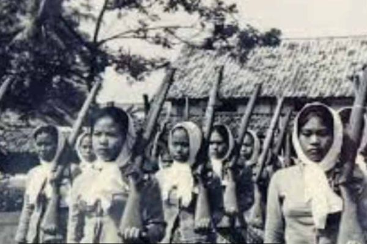

Pembela Tanah Air (PETA)
organisasi militer Jepang yang dibetuk pada 3 Oktober 1923

Gerakan 3A
Gerakan 3A adalah propaganda Jepang yang dibentuk pada April 1942 sebagai upaya menarik simpati rakyat Indonesia

Pusat Tenaga Kerja (PUTERA)
Pusat Tenaga Kerja (PUTERA) adalah organisasi propaganda yang dibentuk leh pemerintah Jepang pada 16 April 1943

Organisasi wanita semi-militer (fujinkai)
Fujinkai adalah organisasi perkumpulan perempuan yang di bentuk Jepang pada Agustus 1943.